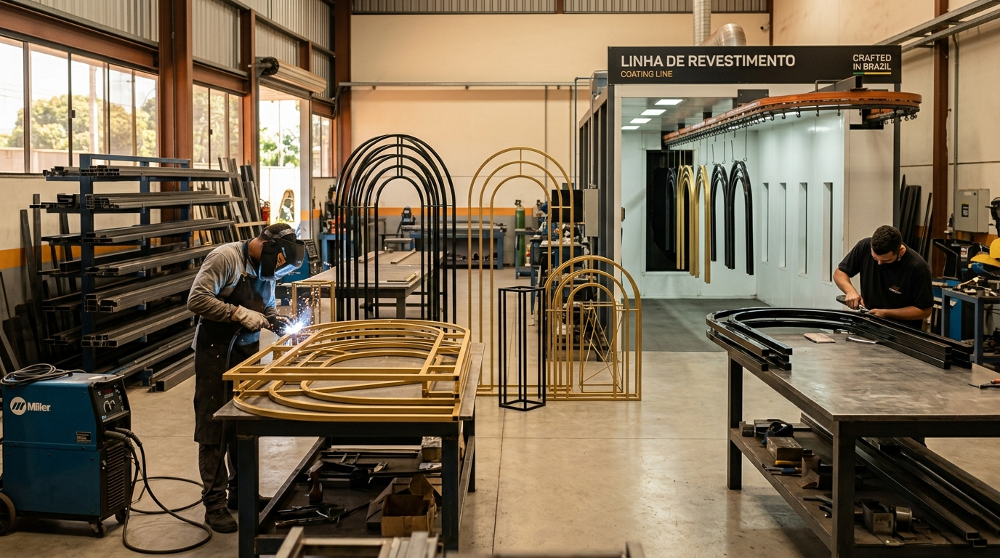

Nascida no maior polo de decoração e ferragens do Brasil, a Baytaka combina vocação industrial, rigor artesanal e profunda compreensão da rotina de quem produz eventos.
Desde a fundação em Porto Ferreira - SP até se tornar uma das principais fornecedoras industriais de mobiliário para locadoras e decoradores de todo o país.
Abertura da primeira oficina com foco em serralheria artística e fundição para peças ornamentais de decoração, estabelecendo o padrão de robustez mecânica que guia a marca até hoje.
Com o crescimento do mercado de casamentos e formaturas no Brasil, a Baytaka desenvolveu linhas modulares pioneiras de arcos, suportes florais e mesas desmontáveis de fácil logística.
Instalação de linha robotizada de pintura a pó eletrostática termoendurecível, eliminando oxidações e elevando a durabilidade das peças a um patamar industrial superior.
Com catálogo superior a 350 modelos, rede de representantes comerciais e expedição diária, a Baytaka é a parceira estratégica de milhares de profissionais de eventos.
Não somos revendedores ou importadores genéricos. Todas as peças são concebidas, soldadas, pintadas e testadas dentro do nosso próprio parque fabril.
Soldas com polimento milimétrico e camadas generosas de tinta em pó automotiva. Cores elegantes como Dourado Acetinado, Ouro Velho e Champagne sem tons amarelados baratos.
Embalagem industrial especial contra atrito e impactos. Parcerias com transportadoras de carga fracionada com seguro total até a porta do seu depósito.
Fale diretamente com nossa equipe de consultores técnicos para receber o catálogo e um atendimento personalizado.